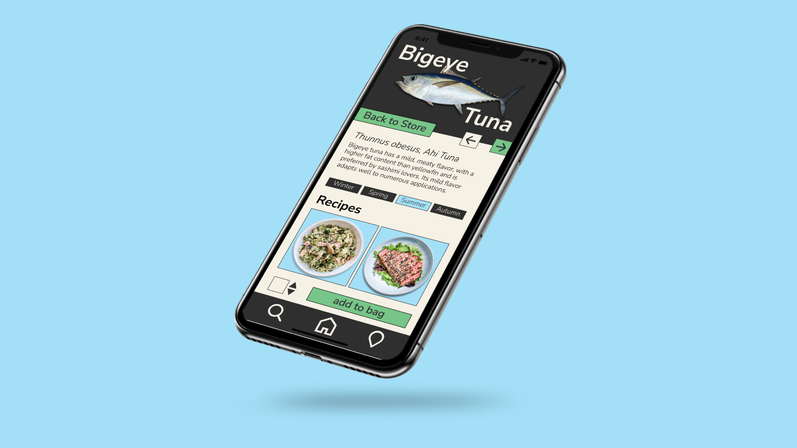
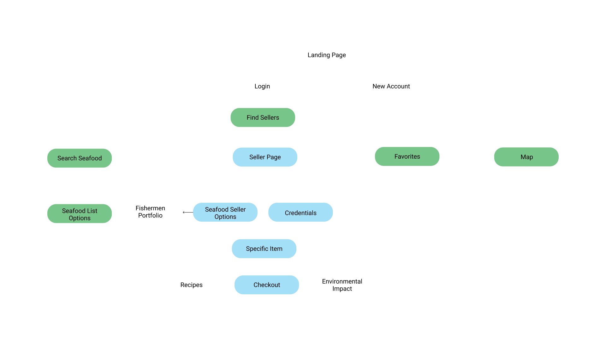
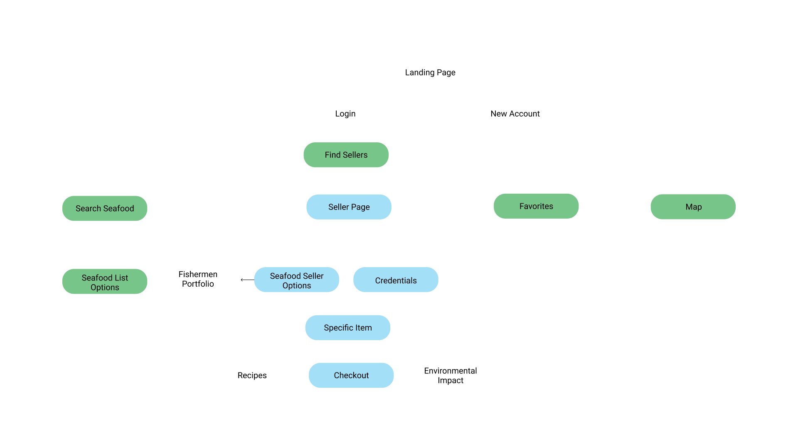

Sustainable Seafood App Design
Timeframe
3 weeks
Skills
- Mobile Product Design
- Interaction Design
- User Research
- User Testing
Too often has sustainable seafood seemed like a prohibitively complex web that the consumer must navigate on their own. We don’t think about seafood as an integral part of food systems like the American Staples of beef and spinach. Instead it is an environmentalist's burden, a fringe worry that the public doesn't have the bandwidth to consider.
This design seeks to upend those misconceptions.
Objectives
The objectives of this project are two-fold:
1. Formalize connections between local fisheries and consumers on a platform curated with features that allow access to cheap, quality, and sustainable seafood.
2. Reorient seafood as a food market which decreases anxiety about purcashing, increases knowledge about its nutritional and environmental benefits, and makes consumers seriously consider it as an alternate protein source.
Interview
The whole narrative around seafood has become wrapped up in conserving the ocean...it’s up for us to re engage in the bigger food systems…
--Dave Little, PhD, University of Stirling
“ ...a [purely] consumer focused platform is the wrong strategy... allowing fishmongers to share education tools with the consumer would be really valuable...most powerful is generating interest in learning more.”
Kim Thompson-Program Manager at Aquarium for the Pacific’s Seafood For the Future
“...everyone with access provides value, like Uber. You can connect consumers to producers say “hey we’re here!” via a mapping system."
Mackenzie Nelson-Science Communications Fellow at Aquarium of the Pacific’s Seafood For the Future
Visual Language: Color and Type
I took inspiration from existing food apps to orient this project in the same realm as food delivery services. It should seem familiar, unintimidating, and friendly even to the consumer unfamiliar with seafood. The collaged graphic elements add consistency to the seller provided photos and bring in an aspect of education to interrupt what would otherwise be a purely commercial experience. It also brings in a sense of warmth with the sellers, fostering local community between fisheries and their buyers.
 

Levels of Functionality

- The homepage is collection of the freshest seafood, ranked as one of the most sought after characteristics in seafood for consumers. The carousel allows a convenient way to quickly browse the day's offerings, much like a real dock.
- The search function users who know what they want to quickly locate their desired product and get an idea of availability and pricing.

- Users can explore the profile information for each vendor at a glance with contact information and location highlighted.
- A separate section is dedicated to demystifying the sustainability certifications to provide an effortless educational element that can be engaged if the user wishes to or can be bypassed without sacrificing usability.

- The item page provides a wide variety of scientific, culinary, and environmental knowledge to open the user's mind to the possibilities and delights of the species without inundating them with technical terminology.
- The user can explore as they wish or they can choose to bypass reading the information and directly add the item to their bag. In this way, both a streamlined shopping experience and educational deep dive are possible.